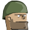

<html>
	<head>
		<title>Trenches on Fire</title>
	</head>
	<script language="Javascript" src="../../Framework/jsGFwk.js"></script>
	<script language="Javascript" src="../../Framework/jsGFwk2dFastAnimation.js"></script>
	<script language="Javascript" src="../../Framework/jsGFwkContainer.js"></script>
	<script language="Javascript" src="../../Framework/jsGFwkIO.js"></script>
	<script language="Javascript" src="../../Framework/jsGFwkCollisions.js"></script>
	<script language="Javascript" src="../../Framework/jsGFwkRM.js"></script>
	<script language="Javascript" src="../../Framework/jsGFwkSprites.js"></script>
	<script language="Javascript" src="../../Framework/jsGFwkFonts.js"></script>
	<script language="Javascript" src="../../Framework/jsGFwkScenes.js"></script>
	<script language="Javascript" src="../../Framework/jsGFwkPath.js"></script>
	<script language="Javascript" src="../../Framework/jsGFwkTimers.js"></script>
	<script language="Javascript" src="../../Framework/jsGFwkJukebox.js"></script>
	
	<script language="Javascript" src="scripts/globals.js"></script>
    <script language="Javascript" src="scripts/bullet.js"></script>
    <script language="Javascript" src="scripts/gameBackground.js"></script>
    <script language="Javascript" src="scripts/hud.js"></script>
	<script language="Javascript" src="scripts/trenchController.js"></script>
	<script language="Javascript" src="scripts/trench.js"></script>
    <script language="Javascript" src="scripts/player.js"></script>
	
	<body style="border:0px; margin:0px; padding:0px; background-color: white;">
		<canvas width="640" height="480" id="canvas"></canvas>
	</body>
    
</html>
<script>
	
    var loadingImg = document.getElementById('loadingFace');
    
	jsGFwk.settings.canvas = "canvas";
	jsGFwk.settings.clearColor = "rgb(50, 50, 50)";
	jsGFwk.settings.frameRate = 1000 / 60;
	
	jsGFwk.include("FastAnimation");
	jsGFwk.include("Container");
	jsGFwk.include("IO");
	jsGFwk.include("Collisions");
	jsGFwk.include("ResourceManager");
	jsGFwk.include("Sprites");
	jsGFwk.include("Fonts");
	jsGFwk.include("Scenes");
	jsGFwk.include("Path");
	
	jsGFwk.Fonts.createFont({ name: 'zxBold', source: 'fonts/zxBold.ttf' });

    //Create new objects
    var leftTrenchController = new trenchController({
        side: global.sides.left,
        x: 126, //global.trenchConfig.trenchDefinition.width,
        showFire: true,
        trenchDirection: global.trenchDirections.right
    });
    leftTrenchController.id = "leftTrenchController";
    
    var rightTrenchController = new trenchController({
        side: global.sides.right,
        x: 600,
        showFire: true,
        trenchDirection: global.trenchDirections.left
    });
    rightTrenchController.id = "rightTrenchController";
    
    var trenchContainer = jsGFwk.Container.createContainer("trenchCloner", new trench(), true);
    var mainHud = new hud();
    var gBackground = new gameBackground();
    
    var player1 = new player({ player: global.sides.left, generalConfiguration: global.playersConfig.player1 });
    player1.id = "player1";
    
    var player2 = new player({ player: global.sides.right, generalConfiguration: global.playersConfig.player2 });
    player2.id = "player2";
    
    var bulletContainer = jsGFwk.Container.createContainer("bulletCloner", new Bullet(), true);
    player1.bulletContainer = bulletContainer;
    player2.bulletContainer = bulletContainer;
    //End of object creation
    
    jsGFwk.ResourceManager.addGraphic({ name: "face", source: "images/face.png" });
    jsGFwk.ResourceManager.addGraphic({ name: "mainSprite", source: "images/mainSprite.png" });
    jsGFwk.ResourceManager.addGraphic({ name: "hudSprite", source: "images/hud.png" });
    jsGFwk.ResourceManager.addGraphic({ name: "axis", source: "images/nazi.png" });
    jsGFwk.ResourceManager.addGraphic({ name: "ally", source: "images/aliado.png" });
    jsGFwk.ResourceManager.addGraphic({ name: "bullet", source: "images/balas.png" });
    
	jsGFwk.createObject({
		id: "progress",
		visible: true,
		barWidth: 0,
        loaded: 0,
		init: function() {
			jsGFwk.ResourceManager.onResourcesLoadedCompleted = function() {
		
                jsGFwk.Sprites.createSprite({
                    id: "background", 
                    graphic: jsGFwk.ResourceManager.graphics.mainSprite.image, 
                    top: 189, left: 0, width: 640, height: 480
                });
                
                jsGFwk.Sprites.createSprite({
                    id: "cactusShadow", 
                    graphic: jsGFwk.ResourceManager.graphics.mainSprite.image, 
                    top: 0, left: 126, width: 51, height: 32
                });
                
                jsGFwk.Sprites.createSprite({
                    id: "cactus", 
                    graphic: jsGFwk.ResourceManager.graphics.mainSprite.image, 
                    top: 1, left: 178, width: 40, height: 57
                });
                
                jsGFwk.Sprites.createSprite({
                    id: "player1Shadow", 
                    graphic: jsGFwk.ResourceManager.graphics.mainSprite.image, 
                    top: 154, left: 247, width: 46, height: 31
                });
                
                jsGFwk.Sprites.createSprite({
                    id: "player2Shadow", 
                    graphic: jsGFwk.ResourceManager.graphics.mainSprite.image, 
                    top: 151, left: 330, width: 46, height: 31
                });
                
                jsGFwk.Sprites.createSpriteCollection("allySoldier", 
                    jsGFwk.ResourceManager.graphics.mainSprite.image, 
                    [{top: 90, left: 249, width: 40, height: 56 }]);
                jsGFwk.Sprites.allySoldier.loop(true);
                
                jsGFwk.Sprites.createSpriteCollection("axisSoldier", 
                    jsGFwk.ResourceManager.graphics.mainSprite.image, 
                    [{top: 91, left: 339, width: 40, height: 56}]);
                jsGFwk.Sprites.axisSoldier.loop(true);
                
                jsGFwk.Sprites.createSpriteCollection("route", 
                    jsGFwk.ResourceManager.graphics.mainSprite.image, 
                    [{left: 0, top: 126, width: 63, height: 63},
                     {left: 0, top: 63, width: 63, height: 63},
                     {left: 63, top: 63, width: 63, height: 63},
                     {left: 665, top: 0, width: 63, height: 63},
                     {left: 728, top: 0, width: 63, height: 63},
                     {left: 473, top: 0, width: 63, height: 63}
                    ]);
                
                jsGFwk.Sprites.createSpriteCollection("hud", 
                    jsGFwk.ResourceManager.graphics.hudSprite.image, 
                    [{left: 293, top: 371, width: 32, height: 99},
                     {left: 350, top: 371, width: 58, height: 99},
                     {left: 419, top: 371, width: 63, height: 99},
                     {left: 491, top: 371, width: 85, height: 99},
                     {left: 608, top: 371, width: 32, height: 99}]);
                
                jsGFwk.Sprites.createSpriteCollection("allyWalkingRight", 
                    jsGFwk.ResourceManager.graphics.ally.image, 
                    jsGFwk.Sprites.generateStandardCrop({left: 0, top: 0, width: 40, height: 56}, 13));
                jsGFwk.Sprites.allyWalkingRight.loop(true);
                
                jsGFwk.Sprites.createSpriteCollection("allyWalkingLeft", 
                    jsGFwk.ResourceManager.graphics.ally.image, 
                    jsGFwk.Sprites.generateStandardCrop({left: 0, top: 0, width: 40, height: 56}, 13, true));
                jsGFwk.Sprites.allyWalkingLeft.loop(true);
                
                jsGFwk.Sprites.createSpriteCollection("axisWalkingLeft", 
                    jsGFwk.ResourceManager.graphics.axis.image, 
                    jsGFwk.Sprites.generateStandardCrop({left: 0, top: 0, width: 40, height: 56}, 15));
                jsGFwk.Sprites.axisWalkingLeft.loop(true);
                
                jsGFwk.Sprites.createSpriteCollection("axisWalkingRight", 
                    jsGFwk.ResourceManager.graphics.axis.image, 
                    jsGFwk.Sprites.generateStandardCrop({left: 0, top: 0, width: 40, height: 56}, 15, true));
                jsGFwk.Sprites.axisWalkingRight.loop(true);
                
                jsGFwk.Sprites.createSpriteCollection("bullet", 
                    jsGFwk.ResourceManager.graphics.bullet.image, 
                    jsGFwk.Sprites.generateStandardCrop({left: 0, top: 0, width: 7, height: 7}, 2));
                jsGFwk.Sprites.bullet.loop(true);
                
                jsGFwk.Sprites.createSpriteCollection("gun", 
                    jsGFwk.ResourceManager.graphics.mainSprite.image, 
                    [{left: 386, top: 132, width: 40, height: 56},
                     {left: 430, top: 132, width: 40, height: 56},
                     {left: 476, top: 132, width: 45, height: 56},
                     {left: 525, top: 132, width: 40, height: 56},
                     {left: 575, top: 132, width: 40, height: 56},
                     {left: 625, top: 132, width: 43, height: 56},
                     {left: 675, top: 132, width: 40, height: 56},
                     {left: 721, top: 132, width: 40, height: 56}
                    ]);
                
                player1.config.idle = jsGFwk.Sprites.allySoldier;
                player1.config.walkingRight = jsGFwk.Sprites.allyWalkingRight;
                player1.config.walkingLeft = jsGFwk.Sprites.allyWalkingLeft;
                player1.config.shadow = jsGFwk.Sprites.player1Shadow;
                player1.config.gun = jsGFwk.Sprites.gun;
                
                player2.config.idle = jsGFwk.Sprites.axisSoldier;
                player2.config.walkingRight = jsGFwk.Sprites.axisWalkingRight;
                player2.config.walkingLeft = jsGFwk.Sprites.axisWalkingLeft;
                player2.config.shadow = jsGFwk.Sprites.player2Shadow;
                player2.config.gun = jsGFwk.Sprites.gun;
                
				jsGFwk.Scenes.create({name: "hud", 
					gameObjects: [mainHud] });

				jsGFwk.Scenes.create({name: "game", 
					gameObjects: [gBackground, 
                                  leftTrenchController, 
                                  rightTrenchController, 
                                  trenchContainer,
                                  bulletContainer,
                                  player1, player2] });

				jsGFwk.Scenes.scenes.hud.enable();
                //jsGFwk.Scenes.scenes.game.enable();
				jsGFwk._gameObjects.progress.destroy();
			};
		},
		update: function(delta) { 
            this.loaded = parseInt((jsGFwk.ResourceManager._totalLoadedResources * 100) / jsGFwk.ResourceManager._totalResources);
        },
		draw: function (context) { 
			context.save();
				context.fillStyle = "white";
                context.textAlign = "center";
				context.fillText("Charging up..." + this.loaded + "%" , 325, 290);
                context.drawImage(loadingImg, 295, 215);
			context.restore();
		}
	});
	
    function startGame() {
	   jsGFwk.start();
    }
</script>